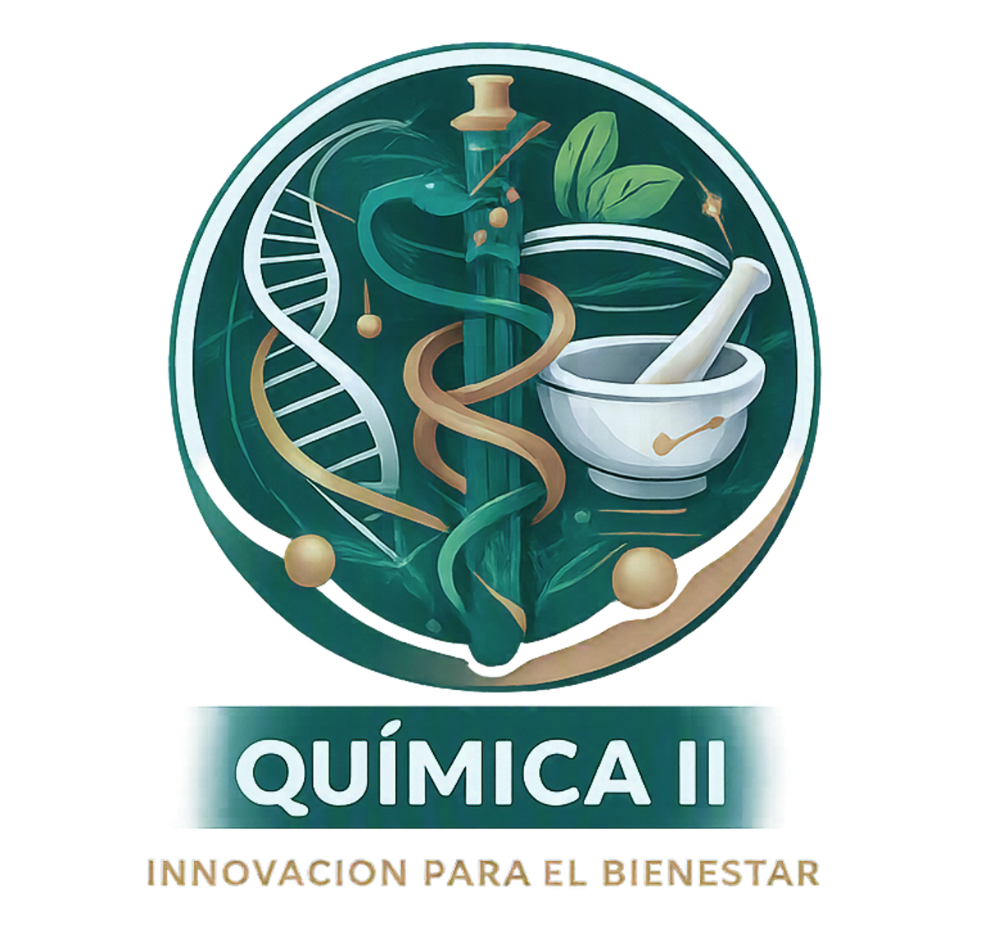

Unidad 4: Electroquímica
Clase 12: Redox, Celdas Galvánicas y Electrolíticas
Una reacción redox implica la transferencia de electrones entre especies. La especie que pierde electrones se oxida (aumenta su número de oxidación) y actúa como agente reductor. La especie que gana electrones se reduce (disminuye su número de oxidación) y actúa como agente oxidante.
Ejemplo: En la reacción $Zn(s) + Cu^{2+}(ac) \rightarrow Zn^{2+}(ac) + Cu(s)$:
El método del ion-electrón separa la reacción en dos semirreacciones: una de oxidación y otra de reducción. Se balancean por separado en medio ácido o básico y luego se igualan los electrones transferidos.
Ejemplo (ácido): Balancear $Cr_2O_7^{2-} + Fe^{2+} \rightarrow Cr^{3+} + Fe^{3+}$
Reducción: $14H^+ + Cr_2O_7^{2-} + 6e^- \rightarrow 2Cr^{3+} + 7H_2O$
Oxidación: $Fe^{2+} \rightarrow Fe^{3+} + e^-$ (×6)
Suma: $14H^+ + Cr_2O_7^{2-} + 6Fe^{2+} \rightarrow 2Cr^{3+} + 6Fe^{3+} + 7H_2O$
El potencial estándar de reducción ($E^\circ$) mide la tendencia de una especie a ganar electrones. Se mide frente al Electrodo Estándar de Hidrógeno (EEH) al que se asigna $E^\circ = 0.00$ V.
Una reacción redox es espontánea si $E^\circ_{celda} > 0$, donde $E^\circ_{celda} = E^\circ_{reducción} + E^\circ_{oxidación}$ (cambiando el signo para la oxidación).
Ejemplo: $Zn^{2+} + 2e^- \rightarrow Zn$ $E^\circ=-0.76$ V; $Cu^{2+} + 2e^- \rightarrow Cu$ $E^\circ=+0.34$ V.
Reacción espontánea: $Zn(s) + Cu^{2+} \rightarrow Zn^{2+} + Cu(s)$
$E^\circ_{celda} = 0.34 + 0.76 = 1.10$ V (espontánea).
Una celda galvánica convierte energía química espontánea en energía eléctrica. Consta de dos semiceldas (ánodo y cátodo) conectadas por un puente salino y un circuito externo.
Ejemplo: Celda Zn-Ni: $Zn(s) + Ni^{2+} \rightarrow Zn^{2+} + Ni(s)$.
Una celda electrolítica utiliza energía eléctrica para forzar una reacción no espontánea (electrólisis). Los electrodos están conectados a una fuente de corriente externa.
Ejemplo: Electrólisis de $AlCl_3$ fundido. $Al^{3+} + 3e^- \rightarrow Al(s)$.
Calcular masa de Al depositada con 20 A durante 3000 s.
$Q = 20 \cdot 3000 = 60000\,C$
Equivalentes = $60000 / 96485 = 0.6219\,eq$
Masa equivalente Al = 27/3 = 9 g/eq
Masa = $0.6219 \times 9 = 5.60\,g$
Haz clic en cada nodo para desplegar u ocultar sus ramas.
Haz clic en la tarjeta para voltearla.
Ingresa los potenciales estándar de reducción de las dos semirreacciones (el primero será la reducción, el segundo la oxidación).
Datos: masa molar (g/mol), número de electrones transferidos, corriente (A), tiempo (s).
El potencial de membrana en neuronas y músculos se genera por gradientes de iones (Na⁺, K⁺, Ca²⁺) y depende de procesos redox en la cadena de transporte de electrones mitocondrial. La glucosa oxidasa es un biosensor enzimático que oxida glucosa y produce una señal eléctrica proporcional a la concentración, usado en medidores de glucosa portátiles.
Muchos fármacos (ej. vitamina C, ácido lipoico) actúan como agentes reductores (antioxidantes) neutralizando especies oxidantes. La estabilidad redox de los medicamentos es crucial en su formulación y almacenamiento.
El sistema buffer $H_2CO_3/HCO_3^-$ está íntimamente ligado al transporte de CO₂ y al pH sanguíneo. La oxidación de nutrientes produce energía en forma de ATP mediante reacciones redox acopladas.
"ANODO = OXIDACIÓN (pierde electrones, polo negativo)"
"CÁTODO = REDUCCIÓN (gana electrones, polo positivo)"
Recuerda: “El gato (cátodo) come electrones” y “El oxígeno se oxida”.
“El agente oxidante se reduce” (porque provoca la oxidación de otro).
“El agente reductor se oxida” (porque provoca la reducción de otro).
“Positivo = Progreso” (reacción avanza espontáneamente).
Al calcular $E^\circ_{celda}$, recuerda que el potencial de oxidación es el opuesto del potencial de reducción.
No se deben sumar semirreacciones sin antes balancear oxígenos con $H_2O$ e hidrógenos con $H^+$ (o $OH^-$).
En una celda electrolítica, el cátodo es el polo negativo (atrae cationes) y el ánodo es el polo positivo (atrae aniones). Es al revés que en las galvánicas.